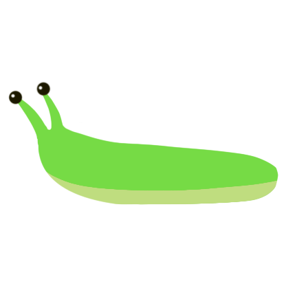
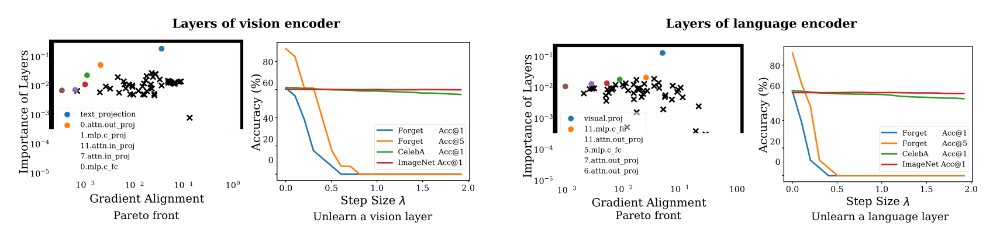

Targeted Unlearning with Single Layer Unlearning Gradient
{kind=link}
Abstract
Machine unlearning methods aim to remove sensitive or unwanted content from trained models, but typically demand extensive model updates at significant computational cost while potentially degrading model performance on both related and unrelated tasks. We propose Single Layer Unlearning Gradient (SLUG) as an efficient method to unlearn targeted information by updating a single critical layer using a one-time gradient computation. SLUG uses layer importance and gradient alignment metrics to identify the optimal layer for targeted information removal while preserving the model utility. We demonstrate the effectiveness of SLUG for CLIP, Stable Diffusion, and vision-language models (VLMs) in removing concrete (e.g., identities and objects) and abstract concepts (e.g., artistic styles). On the UnlearnCanvas benchmark, SLUG achieves comparable unlearning performance to existing methods while requiring significantly less computational resources. Our proposed approach offers a practical solution for targeted unlearning that is computationally efficient and precise.
Single Layer Unlearning Gradient (SLUG  )

Fig. 1: The unlearning framework of our proposed method, Single Layer Unlearning Gradient (SLUG).
Given an unlearning query, such as removing an identity like "Elon Musk", we first curate or generate a forget set containing relevant data and a retain set with data points we want to preserve. Using these datasets, we calculate and store the model gradients. Based on these gradients, we identify the important layers to update for unlearning. We then take a step along the forget gradients of a single layer and evaluate the model's unlearning performance. To determine a suitable step-size (λ), we employ a binary search. After unlearning, the specified concepts are effectively erased while retaining the model's overall utility.
How does Single Layer Update Work?

Fig. 2: Pareto-fronts and step-size analysis of one-step update the vision/language parts of CLIP.
Main takeaway: with a properly selected unlearning step-size (λ), one-step update on one of the pareto-optimal layers, in terms of high concept importance and low forget-retain gradient alignment, can achieve good unlearning and utility retention.
Single layer update with different step-sizes
Use the slider below to adjust the step-size (λ) from 0 to 1.5, with an interval of 0.1, where you can observe images generated by the Stable Diffusion unlearned to varying degrees, on prompts that are related to the target and non-target concepts: "A portrait photo of Elon Musk", "Elon Musk sitting in the car", "A portrait photo of Mark Zuckerberg", "A portrait photo of Taylor Swift", and "A sea turtle in the ocean".
Unlearn "Elon Musk" on Stable Diffusion with increased step-sizes
To select an appropriate step-size (λ), we employ binary search to balance the degree of unlearning with the retention of overall model utility during the update process.
Sample Results
Examples on CLIP zero-shot classification
Fig.3: CLIP original image-text conine similarity matrix.
Fig.4: Unlearning "Elon Musk".
Fig.5: Unlearning "Elon Musk" and "Mark Zukerburg".
Main takeaway: SLUG can effectively unlearn multiple targeted identities from CLIP. By updating a selected layer with a single gradient for each distinct identity, it introduces modularity into the unlearning process.
Examples on Stable Diffusion Image Generation

Fig. 6: Unlearning copyright-protected intellectual property ("Mickey Mouse" and "Iron Man") from Stable Diffusion-v2.1 model.
After unlearning with SLUG, Stable Diffusion fails to generate images associated with the targeted copyright-protected figures, while the overall image generation utility of the original model is largely preserved.
Examples on Vision-Language Models

Fig. 7: Unlearning the celebrity example "Elon Musk" from LLaVA-v1.5-7B model.

Fig. 8: Unlearning the celebrity example "Taylor Swift" from LLaVA-v1.5-7B model.
While targeted identities are mapped to wrong name or gender after the unlearning, the other celebrities identification remain unaffected. Besides, model's robustness against style distribution shift is also preserved. SLUG can effectively unlearn targeted identities while preserving the model’s utility on vision-language tasks, maintains high accuracy and functionality across a range of tasks, ensuring minimal impact on the model's overall utility.
More Results
Comprehensive results on quantitative evaluations, multi-concept unlearning, unlearning of different concepts, and additional qualitative samples for Stable Diffusion and VLMs can be found in the main text and the supplementary material of our paper.
BibTeX
If you find our work helpful for your research, please consider citing us!
@inproceedings{cai2025targeted,
author = {Zikui Cai and Yaoteng Tan and M. Salman Asif},
title = {Targeted Unlearning with Single Layer Unlearning Gradient},
booktitle = {Forty-second International Conference on Machine Learning},
year = {2025},
url = {https://openreview.net/forum?id=6Ofb0cGXb5}
}